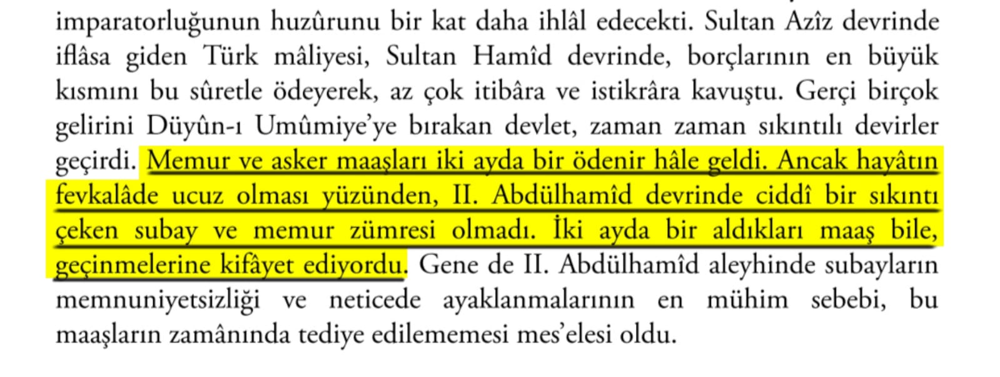
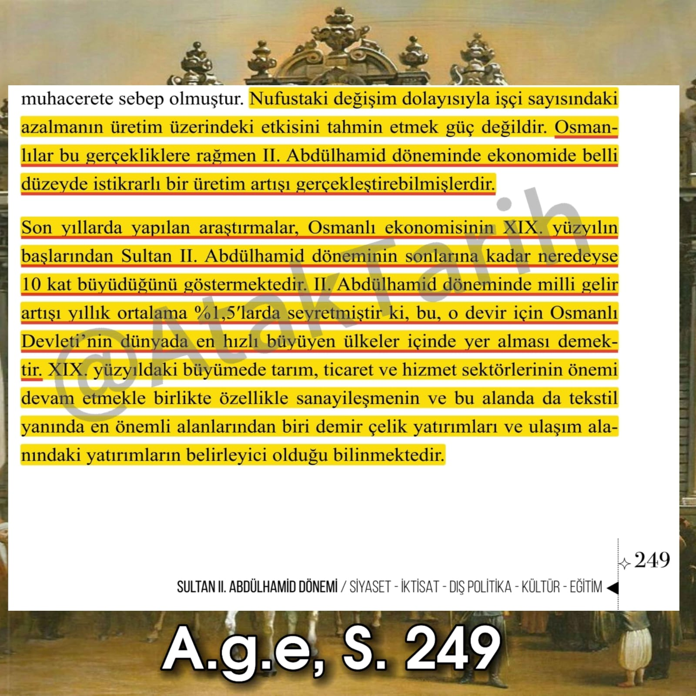
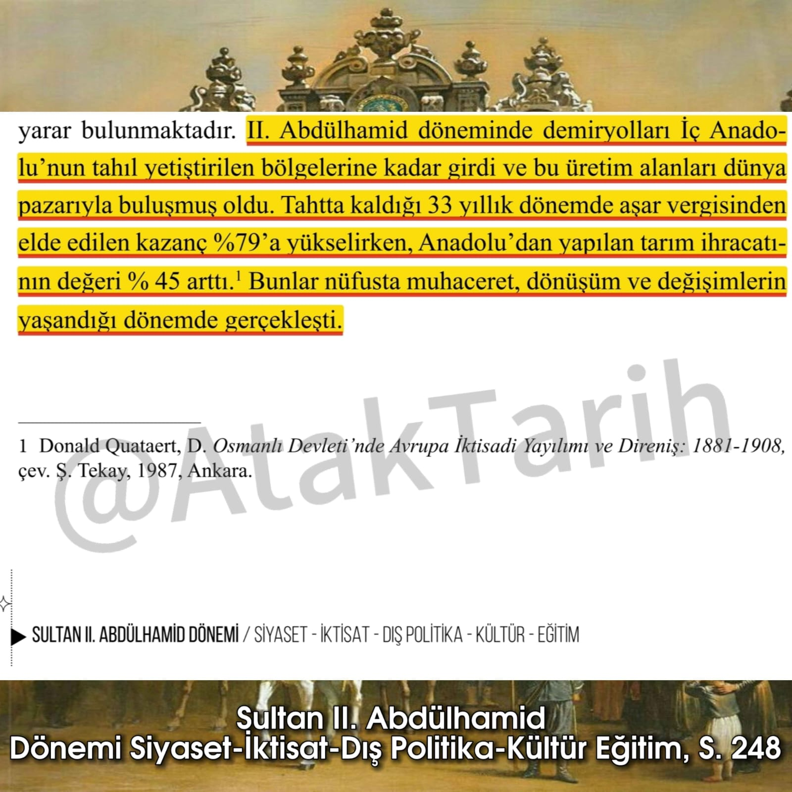
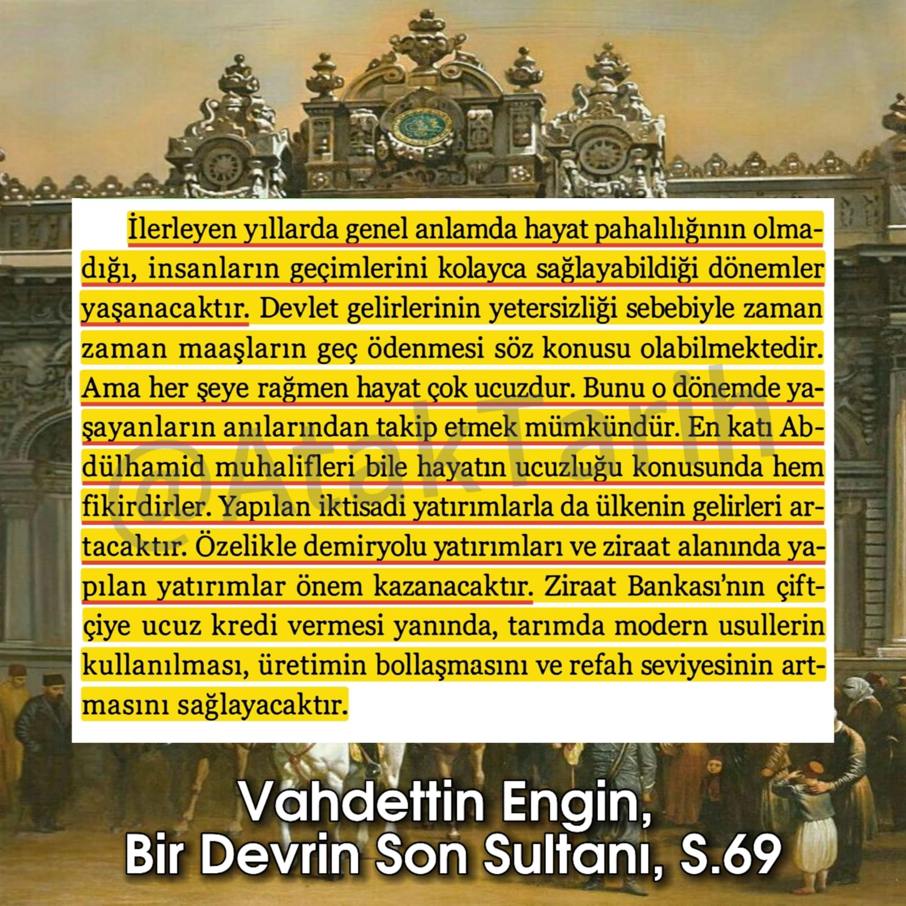
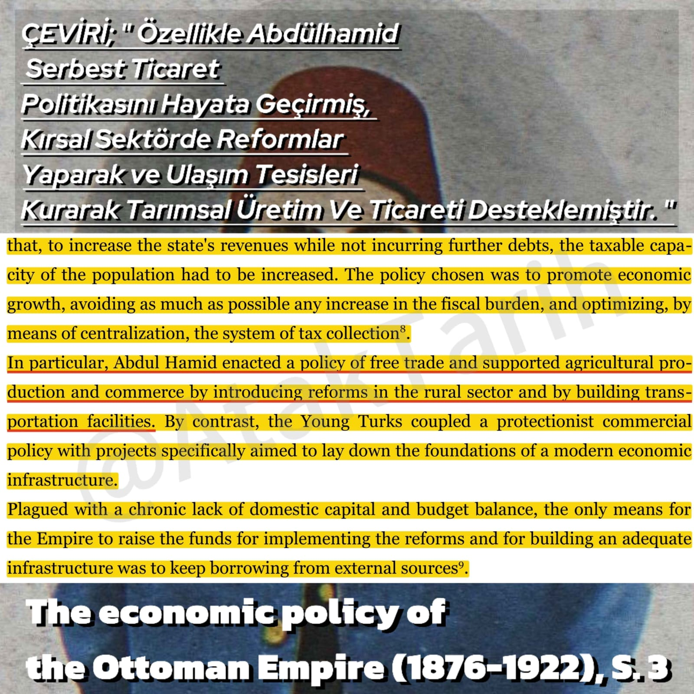
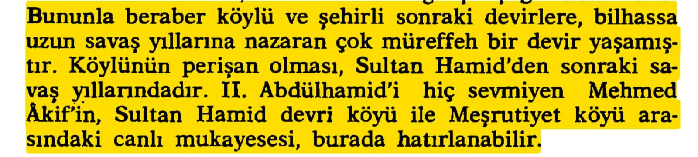
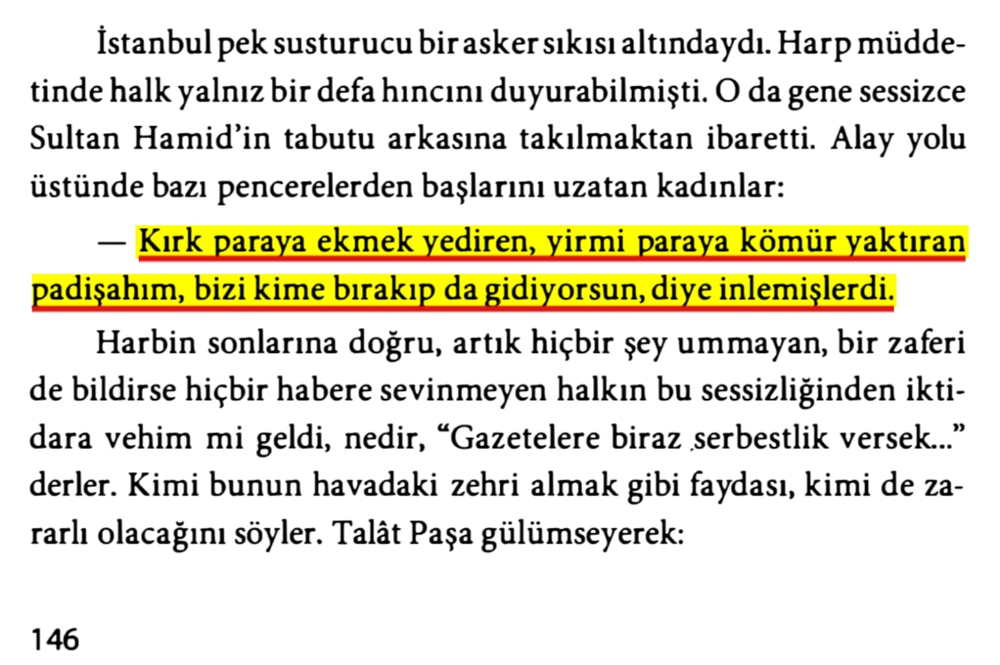

📌 *Abdülhamid Han döneminde ucuzluk oldukça yüksekti. Düyun-u Umumiye'den dolayı maaşlarını iki ayda bir alan asker ve memurlar bile geçinmekte zorlanmıyorlardı.*📚 Yılmaz Öztuna, II.Abdülhamid Zamanı Ve Şahsiyeti, s.71

*📌 Sultan Abdülhamid döneminin sonlarına kadar Osmanlı ekonomisi en az 10 kat büyümüştür*📚 Sultan II. Abdülhamid Dönemi Siyaset-İktisat-Dış Politika-Kültür-Eğitim, S.248-249

2.belge

*📌 "Herşeye rağmen hayat çok ucuzdur"*

*📌 Et Fiyatları Nasıl Aşağıya Çekildi?*

*📌 "Özellikle Abdülhamid, serbest ticaret politikasını hayata geçirmiş, kırsal sektörde reformlar yaparak ve ulaşım tesisleri kurarak tarımsal üretim ve ticareti desteklemiştir."*

*📌 "II. Abdülhamid’i hiç sevmiyen Mehmed Akif’in, Sultan Hamid devri köyü ile Meşrutiyet köyü arasındaki canlı mukayesesi, burada hatırlanabilir."*📚 YILMAZ ÖZTUNA, TÜRKİYE TARİHİ, CİLT 12, S.204
